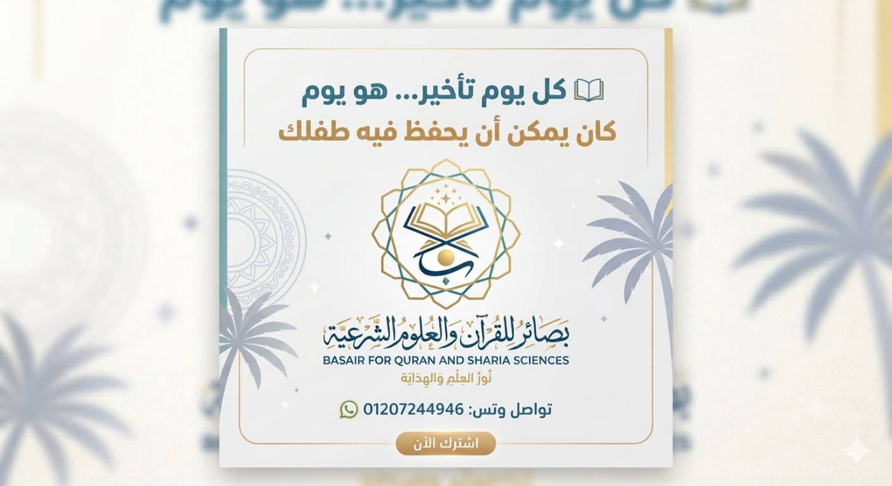
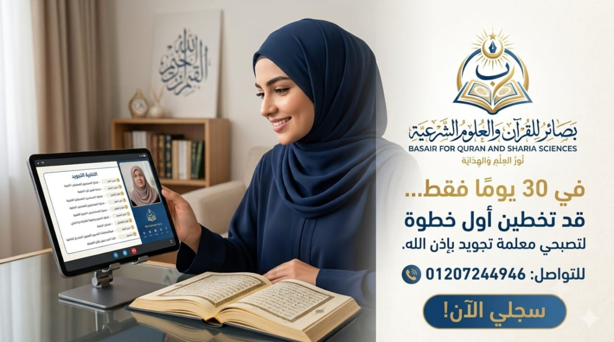

📖
تحفيظ الأطفال
برامج تربوية وتعليمية تناسب الأعمار والمستويات المختلفة، مع التلقين والتكرار والمتابعة حتى يثبت الحفظ بإذن الله.
نور العلم والهداية — رحلة إيمانية وعلمية نحو حفظ كتاب الله وإتقان تلاوته، مع برامج تعليمية أونلاين لجميع الأعمار والمستويات.

في أكاديمية بصائر للقرآن والعلوم الشرعية، نقدم برامج تعليمية عن بُعد تجمع بين الحفظ والتجويد والتربية الإيمانية، مع متابعة مستمرة تراعي قدرات كل طالب ووقته وأهدافه.

برامج متنوعة تجمع بين الإتقان والمتابعة والتدرج في التعلم.
برامج تربوية وتعليمية تناسب الأعمار والمستويات المختلفة، مع التلقين والتكرار والمتابعة حتى يثبت الحفظ بإذن الله.
حلقات خاصة للكبار مع مراعاة اختلاف الأهداف والأوقات والمستويات، وبرامج حفظ ومراجعة متدرجة.
حلقات أونلاين مخصصة للنساء، مع متابعة مستمرة للحفظ والتجويد والمراجعة.
لمن يرغب في إتقان التلاوة والحفظ والحصول على الإجازة القرآنية بالسند وفق الضوابط العلمية المعتمدة.
العقيدة والفقه والتفسير والحديث والتجويد والآداب الإسلامية والتربية الإيمانية.
الارتقاء بالتلاوة من خلال التوجيه والممارسة والمتابعة، وفق مستوى الطالب واحتياجاته.
اختاري الخطة المناسبة لقدرتك ووقتك، مع التركيز على الإتقان والمراجعة المستمرة.
مسار مكثف لإتمام الحفظ، حسب مستوى الطالب واستعداده وقدرته على الالتزام.
وتيرة مناسبة للدراسة والعمل والالتزامات اليومية، مع حفظ ومراجعة منتظمين.
مسار طويل المدى يتيح التدرج والتثبيت مع المتابعة الدورية.
بوابتك إلى حلقات التحفيظ والتجويد والعلوم الشرعية أونلاين.
ادخل إلى حلقة التحفيظ الخاصة بمجموعتك في موعدها المحدد.
التعلم المباشر والتصحيح مع المعلم أو المعلمة.
حلقات تعليمية في العلوم الشرعية بحسب الجدول المعتمد.
تنبيه: روابط الحلقات لم تُضاف بعد. يمكنك طلب الرابط والموعد من إدارة الأكاديمية.
منظومة متابعة تساعد الطالب على تثبيت الحفظ ومعرفة مستوى تقدمه.
اختبارات بعد الحلقات واختبارات دورية لقياس إتقان الحفظ وفهم ما تمت دراسته.
إرسال تسجيلات التسميع للمراجعة والمتابعة من المعلمة والإشراف.
متابعة مستوى الطالب وتقدمه أولًا بأول، ليكون ولي الأمر شريكًا في رحلة الإنجاز.
تعرّف على الأقسام وحدد البرنامج المناسب.
أرسل بيانات التسجيل إلى إدارة الأكاديمية.
تواصل مع الإدارة لتحديد المجموعة والموعد.
انضم للحلقة وابدأ الحفظ والمتابعة.
سجّل الآن في أكاديمية بصائر للقرآن والعلوم الشرعية، وابدأ رحلة الحفظ والعلم بإذن الله.
للتواصل: 01207244946